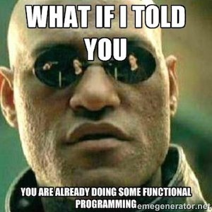

class: center, middle # The Magic of Functional Programming ## for DAB --- class: center, middle ## How does Harry Potter let a book float? <img src="images/harry_potter.jpg" width="60%"> - Steht er mit einer höheren Macht im Bunde? - Ruft er die "float"-Methode des Buch-Objekts auf? - Zieht er vielleicht alle Luftmoleküle unter dem Buch zusammen, so dass ein Luftkissen entsteht? --- class: center, middle ##Nah - he is not that smart! <img src="images/harry_potter_brain.jpg" width="60%"> <!-- - Höhere Macht ist zwar Möglich, aber was wäre dan HP ohne diese Macht? Warum dreht sich --> <!-- dann in den Geschichten nicht alles um Gott oder den Teufel --> <!-- - Wenn es am Buch tatsächlich eine "float"-Methode geben sollte, würde ich mir ernsthaft --> <!-- um das Design der Realität sorgen machen. --> <!-- - Vielleicht, aber wie wählt er die Moleküle aus? --> --- ## Harry Potter's magic spell * is not connected to the book directly * can be combined with other spells * is an interface to reduce the complexity of reality <!-- Eines ist jedenfalls klar. Der Zauberspruch von Harry Potter muss folgende Anforderungen erfüllen: --> <!-- - Der Zauberspruch hat nix mit dem Buch zu tun. Man kann den Schwebespruch auf alle möglichen "Objekte" anwenden. --> <!-- - Man kann den Schwebespruch mit anderen Zaubersprüchen kombinieren --> <!-- - Der Zauberspruch vereinfacht die Zugriff auf die Realität, in dem er zum einen --> <!-- - die richtigen Luftmoleküle auswählt --> <!-- - jedes einzelne Luftmolekühl in Aufwärtsbewegung versetzt. --> <!-- - Für beides dürfte ein anderer Magier sich schon mal einen Spruch ausgedacht haben, --> <!-- so dass der Schwebespruch selbst wohl eine Kombination von Sprüchen enthält. --> <!-- --> <!-- Warum erzähl ich Euch überhaupt was über Harry Potter? Weil Programmieren meiner Meinung nach --> <!-- viel mit Zauberrei zu tun hat. Und wie wir vielleicht noch sehen werden, gelten für Software --> <!-- ähnliche Anforderungen wie für Zaubersprüche. Ich behaupte, dass wir mit Funktionaler Programierung --> <!-- viel leichter diese Anforderungen erfüllen können... --> --- class: center, middle  <!-- Wenn Ihr schon mal JavaScript geschrieben habt, habt ihr mit großer Wahrscheinlichkeit schon mal --> <!-- ansatzweise Funktional programmiert. Das kommt daher, dass Brendan Eich bei der Entwicklung von JavaScript --> <!-- eher Scheme im Hinterkopf hatte als Java. Man hat JavaScript damals eigentlich nur aus Marketing-Gründen --> <!-- "Java" genannt und mit relativ schlechten Vererbungs-Methoden versehen, weil eben Java damals der große --> <!-- der "nhS" (neuester heißer Scheiß) war. --> <!-- Was aber die wahre Macht von JavaScript ausmacht, sind Features die erst kürzlich Java8 hinzugefügt wurden. --> <!-- Damit meine ich z.B. Lamdas und Closures --> --- ##Functions are "First-Class-Citizens" ```javascript var clickHandler = function () { console.log("Click occured."); }; $(document).on("click", clickhandler); ``` <!-- JavaScript-Funktionen sind so genannte "First-Class-Citizens". D.h. sie können nach belieben --> <!-- - Variablen zugeordnet werden, --> <!-- - anderen Funktionen als Parameter über geben werden, --> <!-- - ja sogar Rückgabewerte von anderen Funktionen sein. --> --- ##Closures ```javascript var remember = function () { var value = 42; return function () { return value; }; }; var extract = remember(); extract(); //42 ``` <!-- Der Function-Scope von JavaScript erlaubt es nicht nur einer Funktion auf die Variablen der sie --> <!-- umschließenden Funktion zu zugreifen, Die Variablen bleiben sogar erhalten, wenn die darauf ver- --> <!-- weisende Funktion als Rückgabewert den Function-Scope verlässt. D.h. obwohl sogar die remember- --> <!-- funktion in diesem Beispiel ausgeführt wurde, bleibt der Wert der Variable value erhalten. Diesen --> <!-- Speicherzustand nennt man Clousre. --> --- ##Higher Order Functions ```javascript var myParams = [1,2,3], sliceParams = myParams .slice .bind(myParams, 1); setTimeout(sliceParams, 1000); //after one second myParams === [2,3] ``` <!-- Sog. Higher Order Functions wie setTimeout nehmen Funktionen als Parameter entgegen und/oder geben --> <!-- Funktionen als Rückgabewert zurück. --> --- class: center, middle ##... and I'll show you how deep the rabbit hole goes ... <!-- Durch diese Grundlagen ergeben sich ganz neue, ungeahnte Möglichkeiten zur Code-Strukturierung. --> <!-- Ich für meinen Teil habe mir völlig neue Denkmuster über das Programmieren zugelegt und glaube --> <!-- ein besserer Programmierer geworden zu sein, seit ich Funktional denke. --> <!-- Aber ich muss ehrlich sein, nicht nur das. Jedesmal wenn ich jetzt Java-Code in die Hand nehmen --> <!-- muss kommt mir Java so unglaublich umständich vor. Alle Leute die ich kenne und sich mit Funktionaler --> <!-- Programmierung angefreundet haben empfinden ebenso. Ich wette, es wird Euch ähnlich ergehen, wenn --> <!-- ihr nach meinem Vortrag tiefer einsteigt. --> --- class: center, middle ## Reduce Complexity <img src="images/groundhog_day.gif" width="100%"> <!-- Für mich hat Funktionale Prorammierung angefangen, als ich noch mit C++ Navi-Software geschrieben --> <!-- habe. Ständig habe ich furchtbar umständlichen Code geschrieben, der kaum wartbar war. Teilweise --> <!-- sogar nach der Copy&Paste-Methode. --> <!-- Selbst das schreiben von Schleifen war so umständlich, dass ich selbst nach mehreren Jahren immer --> <!-- wieder mal Tipfehler reingebaut habe, die ich nicht auf den ersten Blick erkennen konnte. --> <!-- Ich habe gelernt, wie wichtig es ist, jede Möglichkeit Komplexität im Code zu reduzieren. --> --- ## What is the problem with this kind of loop? ```javascript var nums = [1,2,3]; for(var i = 0; i < nums.length; i++) { var num = nums[i]; console.log(num); } ``` <!-- Was ist z.B. bei dieser Schleife unnötig kompliziert? --> <!-- --> <!-- - Wir müssen eine Zähler-Variable pro Schleifendurchlauf mutieren --> <!-- - Beim Vergleich der Zähler-Variable zur Array-Länge können sich leicht Fehler einschleichen --> <!-- - Wir müssen nochmal extra das Element, welches uns interessiert, aus der Liste extrahieren --> --- ## JavaScript can do far better then that ```javascript [1,2,3].forEach(function (num) { console.log(num); }); ``` * JS-Arrays come nativly with a forEach-Method * Complexity gets reduced * Shorter and clearer code <!-- Die Arrays von JavaScript kommen mit mehreren Funktion höherer Ordnung, die das Iterieren --> <!-- über Listen wesentlich vereinfachen. forEach z.B. erwartet eine Callback-Funktion, die für jedes --> <!-- Element in der Liste einmal aufgerufen wird. Die Zählervariable entfällt komplett. Stattdessen --> <!-- bekomme ich das ListenElement automatisch in die Callback-Funktion hineingereicht und kann damit --> <!-- arbeiten. Dieser Code ist weniger komplex, leichter zu Verstehen und elegant. --> --- class: middle, center #Side Effects <img src="/images/butterfly_effect.gif" width="90%"> <!-- Aber forEach hat ein Problem. Es eignet sich nur für das gewollte Ausführen von Seiten effekten. --> <!-- Was ist ein Seiten-Effekt? --> <!-- --> <!-- Ein Seiten-Effekt ist die bewuste oder unbewuste manipulation des Gesamt-Systems. --> <!-- console.log auszuführen ist z.B. ein Seiten-Effekt. Denn es wird der State der globalen Console --> <!-- manipuliert und um einen String erweitert. --> <!-- Seiten-Effekte sind also wichtig. Sie erlauben die Interaktion mit der Software. Aber sie sind --> <!-- stets State-Behaftet so dass sich bei asynchroner Verarbeitung Probleme ergeben. In Sprachen wie --> <!-- Java z.B. können mehrere Threads auf eine Variable zukreifen und ihren State manipulieren. Hierfür --> <!-- muss umständlich der Zugriff auf eine Variable über Semaphoren und ähnliche Mechanismen serialisiert --> <!-- werden. Schaut man sich aber der die Hardware-Entwicklung der letzten Jahre an, so zeigt sich, dass --> <!-- das Arbeiten mit mehreren Threads immer wichtiger wird, da die Prozessoren kaum noch Leistungsfähiger --> <!-- werden dafür aber immer mehr Prozessorkerne in einem Computer verbaut werden. Um dieses Potential --> <!-- auszuschöpfen sollte man darauf achten möglichst wenig Seiten-Effekte in der Software zu verursachen. --> <!-- Eine noch so komplexe Funktion kann zum Beispiel für jedes Element einer Liste gleichzeitig auf mehreren --> <!-- Prozessoren ausgeführt werden, um dann die Ergebnisse aller Threads wieder zu einem Ausgabe-Array --> <!-- zusammen zu führen. --> --- ## forEach is not appropriate for mutation ```javascript [1,2,3].forEach(function (num) { return num * num; }); // returns undefined ``` * forEach is appropriate for Side-Effect calls like console.log * Usually you want to prevent SideEffects that might mutate globals... * You can not manipulate the array in place <!-- Davon mal abgesehen, vereinfacht sich das Schreiben von Software massiv, wenn man nicht ständig --> <!-- darauf achten muss, in welchem Zustand eine Globale Variable gerade ist und sich eine Funktion --> <!-- daran orientieren muss. Das Ziel ist es also stets neue, abgewandelte Versionen eines Arrays --> <!-- erstellen, bis man das eigentliche Ergebnis ermittelt hat um sie dann für den Endnutzer auszugeben. --> <!-- --> <!-- Das wird mit forEach nicht funktionieren. Per Defaut liefert forEach nur undefined zurück. --> --- ## map lets you create a new version of an array ```javascript [1,2,3].map(function (num) { return num * num; }); // returns [1,4,9] ``` * map creates a new array corresponding to the return values of your mapping function * keeping your original array as it was assures that other parts of your programm that depend on it still work as expected <!-- .map speichert das Ergebnis der Callback-Funktion in einem neuen Array, so dass wie in diesem --> <!-- Beispiel, seiteneffekt-frei die Quadrate einer Liste ermittelt werden können. .map ist vermutlich --> <!-- eine der wichtigsten Funktionen in der funktionalen Denke. --> --- ## By the way... ```javascript var square = function (x) { return x * x }; [1,2,3].map(square); ``` * ... this is not only a new way to write loops * You can also pass predefined mapping functions into .map or .forEach <!-- Dabei sei erwähnt, dass die Schreibweise mit der Funktion nicht einfach nur eine Durchgeknallte --> <!-- Methode ist eine Schleife zu schreiben. Was wir bisher gemacht haben, war dass wir stets eine --> <!-- anonyme Funktion als Callback definiert haben. Das muss aber nicht so sein. Wir können ebenso gut --> <!-- benannte Funktionen übergeben, die wir auch an anderer Stelle wieder verwenden könnten. Dafür gibt --> <!-- es noch weitere Beispiele. --> <!-- --> --- class: center, middle <!-- Jean-Luc hier hat das Problem, dass er zwischen lustigen und unlustigen Witzen unterscheiden soll. --> <!-- Wenn wir nun eine Funktion schreiben, die ihm das erlaubt, wie sieht ihr Interface aus und wo --> <!-- könnte man die Funktion noch einsetzen. --> --- ## Predicate-Function ```javascript var isFunny= function (joke) { return Boolean(joke.pointe); }; ``` * A so called predicate-function evaluates input data and returns only a boolean value. <!-- - Eine Prädikats-Funktion bewertet den Eingabe-Parameter und liefert --> <!-- einen boolean wert zurück, der die Annahme über den Eingabeparameter --> <!-- bestätigt oder widerlegt --> <!-- - Prädikats-Funktionen eignen sich zum Beispiel um eine Liste nach einer --> <!-- Eigenschaft deren Elemente zu sortieren. --> <!-- - Genauso kann eine Prädikatis-Funktion dazu dienen Elemente, die eine --> <!-- bestimmte Eigenschaft nicht erfüllen zu filtern: --> --- ##Filter ```javascript var jokes = [ { type: "Chuck-Norris", text: "If a Chuck-Norris programm crashes," pointe: "it is a feature!" }, { type: "Math", text: "Black Holes are, where God devided" pointe: 1/0 } }; jokes.filter(isFunny); // [{type:"Chuck-Norris",text: "..."}] ``` * You can use a so called predicate function that returns true or false to filter elements from a list. <!-- Ähnlich wie .map liefert.filter ein neues Array, in dem jedoch all die Listen-Elemente fehlen, --> <!-- für die die Prädikats-Funktion false zurück geliefert hat. So kommt es, dass in diesem --> <!-- Beispiel nur der Chuck-Norris-Witz übrig bleibt, da die pointe des Mathe-Witzes "undefined" ergibt --> --- class: center, middle ## Spice up your functions <!-- - Was haben nun die bisher gezeigten Schleifen-Funktionen gemeinsam? --> <!-- -> Sie haben nur einen Parameter - nämlich das Listenelement, das wir --> <!-- näher untersuchen wollen --> <!-- - Jetzt haben aber nicht alle Funktionen die wir schreiben nur einen Parameter --> <!-- Die Eigenschaft einer Funktion, die angibt wie viele Parameter diese benötigt um ein valides --> <!-- Ergebnis zu liefern nennen wir: Arity --> --- ## Arity ```javascript var add = function (a, b) { return a + b; }; ``` * Arity is the property of a function, that describes how many parameters are needed. * In this example the function "add" has the arity of 2. <!-- Die Funktion 'add' hier hat eine Arity von 2, da sie die beiden --> <!-- Parameter a und b benötigt. Möchte ich nun die add-Funktion z.B. in einer .map-Anweisung verwenden, --> <!-- dann hab ich ein Problem. Denn .map liefert mir immer nur einen Parameter der Liste. --> <!-- -> Was tun, wenn ich sie nun doch direkt in so eine Schleifen-Funktion übergeben will? --> --- ##Embedding in a Function ```javascript var inc2 = function(b) { return add(2, b); }; inc2(3) //5 [1,2,3].map(inc2); //[3,4,5] ``` <!-- Wenn wir add nicht neu schreiben wollen, (weil die funktion ja so komplex ist ;) dann können wir --> <!-- add von einer neuen Funktion aus aufrufen. --> <!-- In diesem Beispiel hier packen wir add in ein Closure, und legen für a den Wert 2 fest, so dass die neue Funktion inc2 jedweden --> <!-- Parameter um 2 erhöt. inc2 benötigt nun nur noch den Parameter und kann Problemlos in .map übergeben --> <!-- werden. --> --- ##Binding a Function ```javascript var inc2 = add.bind(null, 2) inc2(3) //5 [1,2,3].map(inc2); //[3,4,5] ``` <!-- Diese Schreibarbeit lässt sich durch das "binden" einer Funktion verkürzen. Jedes Function-Object --> <!-- in JavaScript verfügt über eine.bind-Methode. Vermutlich kennt ihr diese Methode eher von der --> <!-- Problemstellung, dass ihr eine Methode eines Objekts an setTimeout übergeben wollt und das --> <!-- "this"-Binding bewahren wollt. --> <!-- Hier wird quasi eine neue Funktion erstellt, deren this.binding festgelegt ist und nicht mehr --> <!-- verändert werden kann. Weil unsere add-Methode keinerlei this-Aufrufe beinhaltet können wir --> <!-- ruhigen Gewissens null als ersten Parameter vergeben. Alle weiteren Parameter werden aber --> <!-- den Eingabeparametern von add zu geordnet beginnend mit dem ersten Parameter von links. --> <!-- D.h. auch hier weisen wir dem Parameter a von add den Wert 2 zu. --> --- class: middle, center <img src="images/curry.png" width="40%"> <!-- Aber es gibt noch eine viel flexiblere Methode, die wir dem Mathematiker Haskell Curry zu --> <!-- verdanken haben. Er lieh seinem Namen nicht nur dem heute gebräuchlichen Wort "currying" --> <!-- was also gar nichts mehr mit Würzen zu tun hat, sondern oben drein auch der Programmiersprache --> <!-- Haskell, die deren Entwickler ihm zu ehren postum so benannt haben. --> --- class: center, middle ##Currying * The Basic idea behind currying is to take a function with n arguments and create from it n functions with one argument each: ###f(x, y, z) = g(x)(y)(z) <!-- Die Idee hinter dem Curring ist folgende: Ich kann aus einer Funktion die n Parameter braucht, --> <!-- n Funktionen bauen die jeweils nur einen Parameter brauchen. Haskell Curry beschäftigte sich mit --> <!-- dieser Idee, weil er ähnlich wie wir das Problem hatte, seine Funktionen zu vereinfachen zu müssen --> <!-- um einen mathematischen Beweis einfacher erbringen zu können. --> <!-- Wie wir gleich sehen werden, ist diese Idee jedoch nicht praxisfern wie der Mathematik im --> <!-- allgemeinen unterstellt wird, sondern das Currying erlaubt uns die Arity einer Funktion noch viel --> <!-- flexibler zu manipulieren als die bisherigen Methoden. --> --- ##_.curry ```javascript var add = _.curry(function(a, b) { return a + b; }); add(2) //returns a function with the arity 1 add(2)(3) //arity of add fullfilled: evaluates 5 var inc2 = add(2); _.map([1,2,3], inc2); //[3,4,5] //but also: _.map([1,2,3], add(3)); //[4,5,6] ``` <!-- Bisher haben wir uns auf die Bordmittel von JavaScript beschränkt. Diese hingen aber imemr --> <!-- an bestimmten JavaScript-Objekten dran und werden teilweise nicht von allen JS-Umebungen --> <!-- unterstützt. .bind z.B. gibt es unter PhantomJS nicht. --> <!-- Statt dessen greifen wir nun auf Lodash zurück. Diese Library, stellt uns ebenso alle bisher --> <!-- behandelten Funktionen wie .map, .filter und .bind bereit. Aber noch ein Menge mehr. --> <!-- Dazu zählt auch _.curry, mit der ich eben eine Funktion wie add mit zwei Parametern in zwei --> <!-- Funktionen uwandeln kann. --> <!-- --> <!-- Was heißt das genau? Im Obigen Beispiel haben wir also add gecurried. --> <!-- Wenn ich nun add mit einem Parameter aufrufe bekomme ich nicht NaN zurück, sondern eine --> <!-- Funktion der Arity 1. Rufe ich diese wieder mit dem Parameter 3 auf, ist die Arity von add erfüllt --> <!-- so dass add ausgeführt werden kann und sich die Summe aus 2 und 3 ergibt. Wir können also --> <!-- ähnlich wie zuvor unsere inc2 Funktion erstellen, indem wir schlicht add mit dem Parameter 2 --> <!-- aufrufen. Aber nun können wir mit leichtigkeit verschiedenste Varianten von add bilden. So z.B. --> <!-- add(3) und dessen ergebnis einer _.map-Funktion übergeben. --> <!-- -->